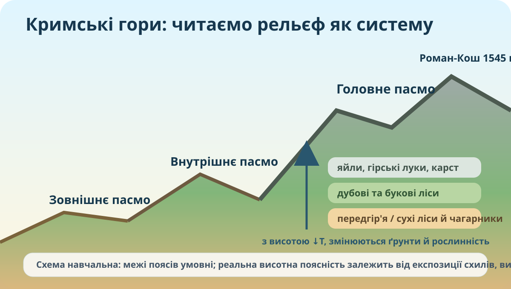

Що робить Кримські гори окремою гірською країною?

Реальний гірський ландшафт Криму. Якщо зовнішнє фото не завантажиться, усі ключові завдання залишаються працездатними.

Локалізуйте гірську систему
OpenStreetMap. Кримський півострів є невід’ємною частиною України.
Картографічний протокол
- Опишіть положення Кримських гір відносно Чорного моря.
- Визначте загальний напрям простягання.
- Знайдіть південний берег Криму й поясніть, чому саме тут рельєф різкіший.
- Позначте словесно положення Роман-Кош.
Чому три пасма не однакові?
| Пасмо | Висота / риси | Ваш причинний висновок |
|---|---|---|
| Зовнішнє | Найнижче, куестові форми | |
| Внутрішнє | Середні висоти, розчленований рельєф | |
| Головне | Найвище; яйли, круті південні схили |
Модель температури
Для шкільного наближення візьмемо зниження температури на 0,6 °C на кожні 100 м.
10.8 °C
Це навчальна модель, а не прогноз фактичної погоди.
Побудуйте поясність
Межі поясів залежать не лише від абсолютної висоти, а й від експозиції схилу, близькості моря та зволоження.
Не «в обох горах є пояси», а чому вони різні?
| Критерій | Кримські гори | Українські Карпати |
|---|---|---|
| Максимальна висота | 1545 м | 2061 м |
| Морський вплив | ||
| Верхній пояс | ||
| Причина відмінностей | ||
Кейс A: забудова схилу
Нові дороги й забудова на крутому схилі.
Кейс B: туризм
Високе рекреаційне навантаження на яйлу.
Кейс C: карст
Будівництво без урахування вапнякового карсту.
Фінальний висновок CER
Домашнє завдання
§42 електронного підручника. Зробіть мініпрофіль «Північний схил → яйла → Південний берег»: 3 природні компоненти, 2 причинні зв’язки, 1 антропогенний ризик.
Електронна школаКритерії 10 балів
Карта — 2; рельєф — 2; поясність — 2; порівняння з Карпатами — 2; CER і рішення — 2.